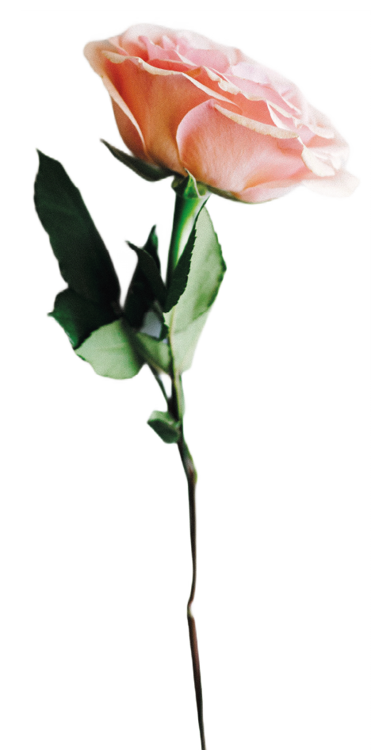

<section id="home">
  <div class="wrapper">
    <div class="_row">
      <div class="_col">
        <div class="heading">
          <div class="subheader">
            <p>Hi! I'm Katrine Joy Dela Cruz</p>
          </div>
          <div class="header">
            <span>Developer</span>
            <span>/Designer</span>
          </div>
          <div class="resume">
            <a class="__btn" href="../assets/DelaCruz_Katrine_Resume.pdf" target="_blank" alt="Resume">View Resume</a>
          </div>
        </div>
      </div>
      <div class="_col">
        
      </div>
    </div>
    <div class="socials">
      <a href="mailto:katrinejdc@gmail.com">
        <svg width="32" height="32" viewBox="0 0 24 24" version="1.1" xmlns="http://www.w3.org/2000/svg" xmlns:xlink="http://www.w3.org/1999/xlink">
          <path fill="currentColor" d="M11.99,13.9 L11.99,10.18 L21.35,10.18 C21.49,10.81 21.6,11.4 21.6,12.23 C21.6,17.94 17.77,22 12,22 C6.48,22 2,17.52 2,12 C2,6.48 6.48,2 12,2 C14.7,2 16.96,2.99 18.69,4.61 L15.85,7.37 C15.13,6.69 13.87,5.89 12,5.89 C8.69,5.89 5.99,8.64 5.99,12.01 C5.99,15.38 8.69,18.13 12,18.13 C15.83,18.13 17.24,15.48 17.5,13.91 L11.99,13.91 L11.99,13.9 Z" id="Shape"></path>
        </svg>
      </a>
      <a href="https://github.com/katjdc">
        <svg width="32" height="32" viewBox="0 0 32 32" xmlns="http://www.w3.org/2000/svg">
          <path fill="currentColor" d="M16 0.396c-8.839 0-16 7.167-16 16 0 7.073 4.584 13.068 10.937 15.183 0.803 0.151 1.093-0.344 1.093-0.772 0-0.38-0.009-1.385-0.015-2.719-4.453 0.964-5.391-2.151-5.391-2.151-0.729-1.844-1.781-2.339-1.781-2.339-1.448-0.989 0.115-0.968 0.115-0.968 1.604 0.109 2.448 1.645 2.448 1.645 1.427 2.448 3.744 1.74 4.661 1.328 0.14-1.031 0.557-1.74 1.011-2.135-3.552-0.401-7.287-1.776-7.287-7.907 0-1.751 0.62-3.177 1.645-4.297-0.177-0.401-0.719-2.031 0.141-4.235 0 0 1.339-0.427 4.4 1.641 1.281-0.355 2.641-0.532 4-0.541 1.36 0.009 2.719 0.187 4 0.541 3.043-2.068 4.381-1.641 4.381-1.641 0.859 2.204 0.317 3.833 0.161 4.235 1.015 1.12 1.635 2.547 1.635 4.297 0 6.145-3.74 7.5-7.296 7.891 0.556 0.479 1.077 1.464 1.077 2.959 0 2.14-0.020 3.864-0.020 4.385 0 0.416 0.28 0.916 1.104 0.755 6.4-2.093 10.979-8.093 10.979-15.156 0-8.833-7.161-16-16-16z"/>
        </svg>
      </a>
      <a href="https://www.linkedin.com/in/kjdelacruz">
        <svg width="32" height="32" viewBox="0 0 310 310" version="1.1" xmlns="http://www.w3.org/2000/svg" xmlns:xlink="http://www.w3.org/1999/xlink" x="0px" y="0px" style="enable-background:new 0 0 310 310;" xml:space="preserve">
          <path fill="currentColor" fill-rule="evenodd" clip-rule="evenodd" id="XMLID_802_" d="M72.16,99.73H9.927c-2.762,0-5,2.239-5,5v199.928c0,2.762,2.238,5,5,5H72.16c2.762,0,5-2.238,5-5V104.73 C77.16,101.969,74.922,99.73,72.16,99.73z"/>
          <path fill="currentColor" fill-rule="evenodd" clip-rule="evenodd" id="XMLID_803_" d="M41.066,0.341C18.422,0.341,0,18.743,0,41.362C0,63.991,18.422,82.4,41.066,82.4 c22.626,0,41.033-18.41,41.033-41.038C82.1,18.743,63.692,0.341,41.066,0.341z"/>
          <path fill="currentColor" fill-rule="evenodd" clip-rule="evenodd" id="XMLID_804_" d="M230.454,94.761c-24.995,0-43.472,10.745-54.679,22.954V104.73c0-2.761-2.238-5-5-5h-59.599 c-2.762,0-5,2.239-5,5v199.928c0,2.762,2.238,5,5,5h62.097c2.762,0,5-2.238,5-5v-98.918c0-33.333,9.054-46.319,32.29-46.319 c25.306,0,27.317,20.818,27.317,48.034v97.204c0,2.762,2.238,5,5,5H305c2.762,0,5-2.238,5-5V194.995 C310,145.43,300.549,94.761,230.454,94.761z"/>
        </svg>
      </a>
    </div>
  </div>
  <div class="_element1">
    
  </div>
</section>
